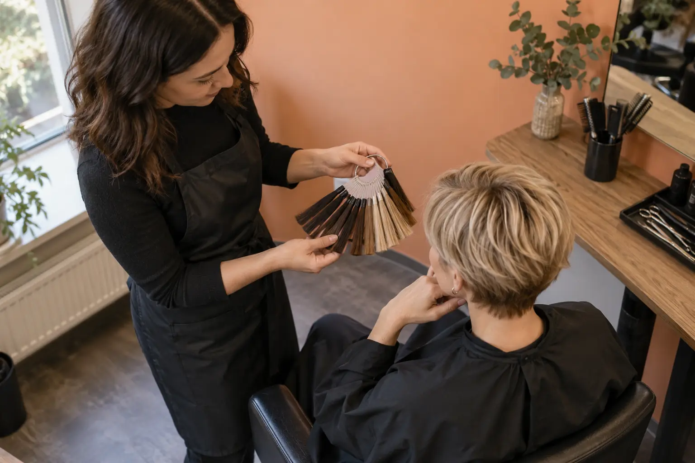

Plaukų dažymo kaina ir trukmė: ilgis, tankis, tonavimas bei kirpimas
Autorius: Madbeauty redakcija · Numatyta 2026 m. lapkričio 24 d. 16:00 (Lietuvos laiku)
Sužinokite, kaip palyginti dažymo pasiūlymus pagal darbų apimtį, plaukų ilgį ir tankį, tonavimą, kirpimą, kainą bei vizito trukmę.

Dažymo kainą ir vizito trukmę prasminga lyginti tik sulyginus darbų apimtį. Vien pasiūlymas „plaukų dažymas“ nepasako, ar įskaičiuoti šaknų ar visų plaukų dažymas, sruogos, tonavimas, kirpimas ir papildomos paslaugos. Todėl prieš lygindami kainas susirašykite norimą rezultatą ir tai, kas turi būti atlikta.
Kas keičia pasiūlymo apimtį
- Dažymo tikslas ir technika. Šaknų dažymas, visų plaukų dažymas, sruogos ir balayage gali būti atskiri meniu variantai. Tonavimas taip pat gali būti įtrauktas į pasiūlymą arba pateiktas kaip atskira paslauga.
- Plaukų ilgis ir tankis. Jei meniu išskiria ilgio kategorijas, pasitikrinkite, kuriai priskiriami jūsų plaukai. Tankį nurodykite teikėjui net tada, kai meniu jo atskirai neįvardija.
- Tonavimas, kirpimas ir kiti priedai. Patikrinkite, ar jie įskaičiuoti į pagrindinę kainą, ar didina bendrą kainą ir vizito laiką.
- Nurodyta trukmė. Vertinkite ją kartu su paslaugų sąrašu. Jei skelbiama tik kaina, iš jos nespėkite, kiek truks visas vizitas.
Palyginkite vienodos apimties pasiūlymus
Naudokite šį trumpą palyginimo ruošinį. Kiekvienam teikėjui užpildykite tuos pačius laukus; taip matysite, ar lyginate panašų darbą, o ne vien kainas.
- Norimas rezultatas ir dažymo technika.
- Plaukų ilgis, tankis ir dažoma sritis.
- Kas įeina į kainą: dažymas, tonavimas, plovimas, džiovinimas ar kirpimas.
- Kokios paslaugos skaičiuojamos papildomai ir kiek jos prideda prie kainos ar laiko.
- Bendra numatoma suma ir vizito trukmė; išsiaiškinkite, ar trukmė apima visas pasirinktas paslaugas.
Pavyzdžiui, 2026 m. spalio 9 d. peržiūrėtame „Looks“ meniu „Airtouch“ pagal apimtį nurodytas kaip 5–6 val. ir 220–280 €. Tame pačiame meniu intensyvus drėkinimas dažymo ar kirpimo metu pateiktas atskirai: 15 min. ir 25 €. Tai vieno teikėjo konkretaus meniu pavyzdžiai, ne Lietuvos kainų vidurkis ir ne Madbeauty pasiūlymas.
„Faces Hair & Makeup“ meniu tonavimą pateikia atskirai nuo visų plaukų dažymo. Kai kuriuose meniu atskirai išskiriamas ir kirpimas. Todėl patikrinkite, ar nurodyta suma apima visą norimą paketą, ar tik vieną jo dalį.
Ką patikslinti prieš apsisprendžiant
Jei kainyne neaišku, kuri ilgio kategorija tinka arba ar tonavimas ir kirpimas įskaičiuoti, paprašykite patikslinti būtent šiuos punktus. Nurodykite plaukų ilgį ir tankį, norimą rezultatą bei tai, ar norite tonavimo ar kirpimo. Taip galėsite palyginti pasiūlymo apimtį ir numatomą trukmę, o ne vien pradinę kainą.
Palyginkite procedūrų aprašus kataloge: Dažymas. Konkrečią darbų apimtį, kainą ir prieinamumą tikrinkite prie realaus teikėjo pasiūlymo.
Planuojamos vidinės nuorodos
Šaltiniai peržiūrai
- Žirmūnų 22 · plaukų paslaugų meniu — 2026-10-09 Žirmūnų 22 meniu: „Olaplex apsauga naudojant bet kurią dažymo techniką“ – papildomas darbas, 15 min., 12 Eur (perbraukta ankstesnė kaina 15 Eur). Meniu nenurodo konkretaus produkto numerio. Tai kaina ir rezervuojama priedo trukmė, ne viso vizito trukmė ar nepriklausoma veiksmingumo patikra. Sistemos protokolas nepatvirtintas.
- Faces Hair & Makeup · dažymo ir kirpimo apimtis — 2026-10-09 meniu: tonavimas atskiras nuo visų plaukų dažymo, papildomas kirpimas keičia bendrą vizitą. Pasiūlymai priklauso ir nuo konkretaus meistro; ne universalios kainos ar trukmės. Neišgalvoti techninių dažų receptų ir garantuoto vieno vizito rezultato.
- Looks · kirpimas ir dažymas — 2026-10-09 Looks: intensyvus plaukų drėkinimas dažymo ar kirpimo metu – papildoma procedūra, 15 min., 25 Eur (ankstesnė kaina 30 Eur). Airtouch – 5–6 val., 220–280 Eur. Vyrų kirpimas su barzdos modeliavimu – 60 min., 40 Eur. Tai meniu pavyzdžiai, ne Lietuvos vidurkis. Priedo trukmė nėra visas atskiras vizitas; konkretaus produkto ar poveikio nepatvirtina.
- Wella · balayage, sruogos ir šviesinimas — Wella puslapyje highlights, pilnas šviesinimas+tonavimas, palaipsnis balayage pateikiami kaip skirtingi spalvos tikslai/technikos. Gamintojo reklama ne nepriklausomas nekenksmingumo įrodymas. Nekurti dažų formulių, oksidantų, veikimo laiko ar savarankiško šviesinimo instrukcijų.